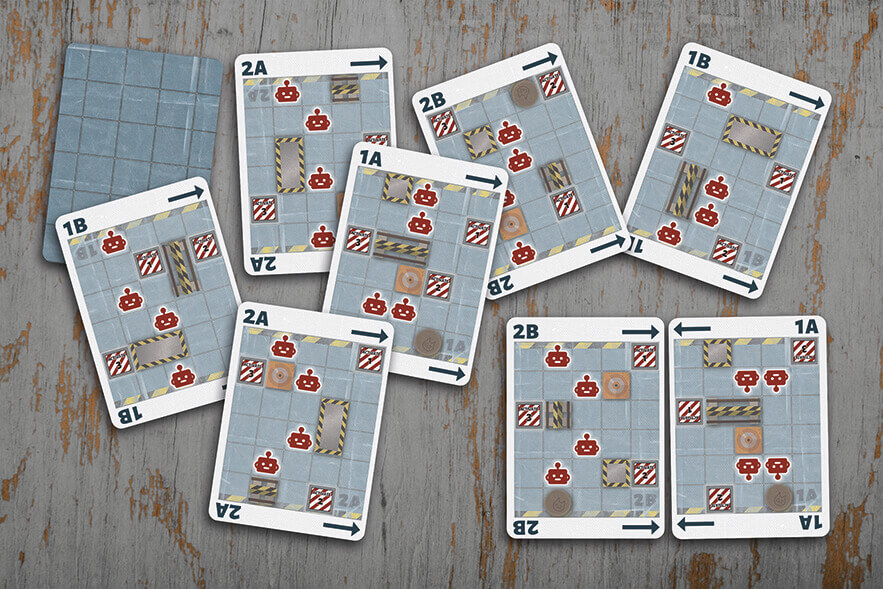

Robot Fight Club is a fast-paced game of kids fighting with robots in an abandoned futuristic academy. The game uses a number of different cards for everything from displaying unique player powers to action selection and damage resolution.
Some cards were designed to look like in-world objects, while others were designed to incorporate theme in other ways. However, all cards were designed to be intuitive and easy to use.
Each player will play as one of the kids that are part of the Robot Fight Club, giving them a unique power to use during the game, and a different scrap budget (scrap is used to buy certain cards). The kids are called Cybernauts.
The Cybernaut cards are designed to look like worn ID cards put together by the kids, so each card has its own unique folds, tape placements and all the photos are all differently skewed. The quotes on the cards are also written in different handwriting fonts as if the kids themselves wrote them. The rest of the text is made to look like it’s written with a typewriter, complete with irregular letter misalignments.
When setting up the game the two game board pieces are placed together to form the arena for the game. To randomize how, the Setup cards are used.
Each Setup card has a central image showing the board, though it is a little bit faded so the icons on top (showing where to place Activation tokens as well as the possible starting spaces for the robots) will be easier to notice. On the top and bottom the label for the board and side (also shown on the boards themselves) is clearly stated along with arrows showing on which side the other board is supposed to go. They are placed on both top and bottom so it doesn’t matter which way you hold it, you still get all the information you need.
Players will purchase Upgrade System cards to improve their robots. There are three types of Upgrade System cards: Motive, Weapon and Special systems. When the cards are inactive they are turned face down.
The Upgrade System cards are designed to look like metal panels, as if they can be bolted onto the robots, which have the same metal look. The different types are shown both through the color of the metal and through the text at the bottom of the card. Since the backs of the cards will show when that card is inactive we decided to make the back say “SYSTEM OFFLINE”, and design the text to look like a flashing warning light.
The Control cards are held in hand during the game, and played for their effect to move, attack or do a special action. Both players choose and reveal their cards simultaneously, and the order of play is decided by their Activation Speed. Each robot has their own unique Control cards in their own deck.
We designed the Control cards to look like classic punch cards that the kids can use to control the robots. This is most evident on the backs of the cards, but can be seen faintly on the fronts as well. The robot name and color, the activation speed number, and the name of the card are all easily visible when the cards are held in hand. On the rest of the card there are big icons for the actions the card will allow you to take, and rule text when applicable.
The Improvisation cards are held in hand together with the Control cards. They are played for their scrap cost to gain an immediate effect.
These cards are designed to look like they’re made out of graph paper, like they could have been made by the kids. When they’re held in hand, you clearly see the scrap cost and the name of the card. The explanatory text has icons integrated in the text where applicable, to make the connection to the actions clearer.
When a robot is hit from a side with no more armor left you have to draw a Serious Damage card. The card will tell you how much critical damage your robot will suffer, and if there is an additional effect. The cards are kept next to your robot to keep track of how much critical damage it has accumulated, and when it reached its critical limit.
The Serious Damage cards are designed as a damaged metal plate. The back of the cards have a dirty and rusty metal look, with the symbol for critical damage in the middle. The fronts of the cards have the same metal look, but more faded to make the information presented more prominent. The critical damage icons are shown at the top of the cards, making it easy to stack several cards together to keep track of the critical damage.